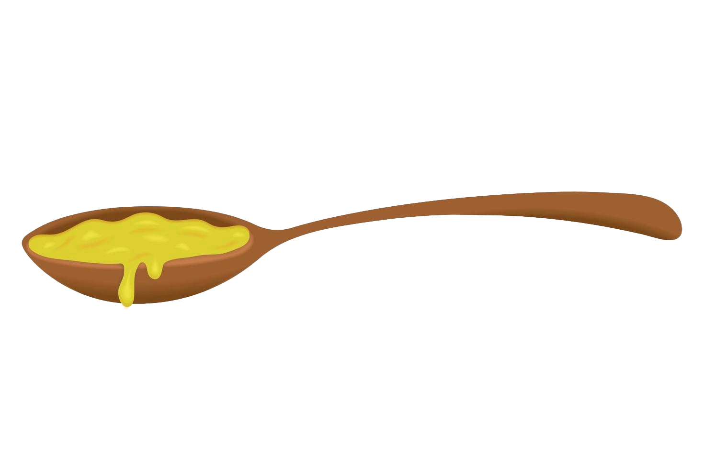

Filet Mignon
Instructions
- Remove steaks from refrigerator an hour before cooking so they can come to room temperature.
- Season both sides of the steak well, with the salt and pepper
- Preheat oven to 400°F
- Using an either a cast iron or oven safe pan, add the butter, garlic, thyme, and rosemary.
- Heat the ingredients in the pan on medium-high heat. While the butter is melting stir is in the pan to prevent it from burning.
- Add the steaks to the pan while it is still hot and sear on both sides for 2-3 minutes. While searing be sure to spoon the butter onto the steaks.
Be sure to not let the butter burn!
- Insert a meat thermometer into the thickest part of steak and put the pan in the oven.
- After about 5-15 minutes, depending on how you want your steak cooked, remove the steak. For rare, the internal temp should be 115-120°F
For medium rare, the internal temp should be 125-130°F. For medium, the internal temp should be 135-140°F. For
medium well, the internal temp should be 145-150°F. For well done, the internal temp should be 155-160°F.
- After steak is removed oven, place on plate and lest rest for at least 5 minutes. The temperature of the steaks should rise another 5 degrees and then you can enjoy!

Try hovering over (and following) the thermometer and butter!!

Ingredients
- 16 ounces of filet mignon
- 1 tsp kosher salt
- 1/2 tsp pepper
- 2 tbsp butter
- 2 cloves garlic
- 2 sprigs fresh rosemary
- 2 sprigs fresh thyme